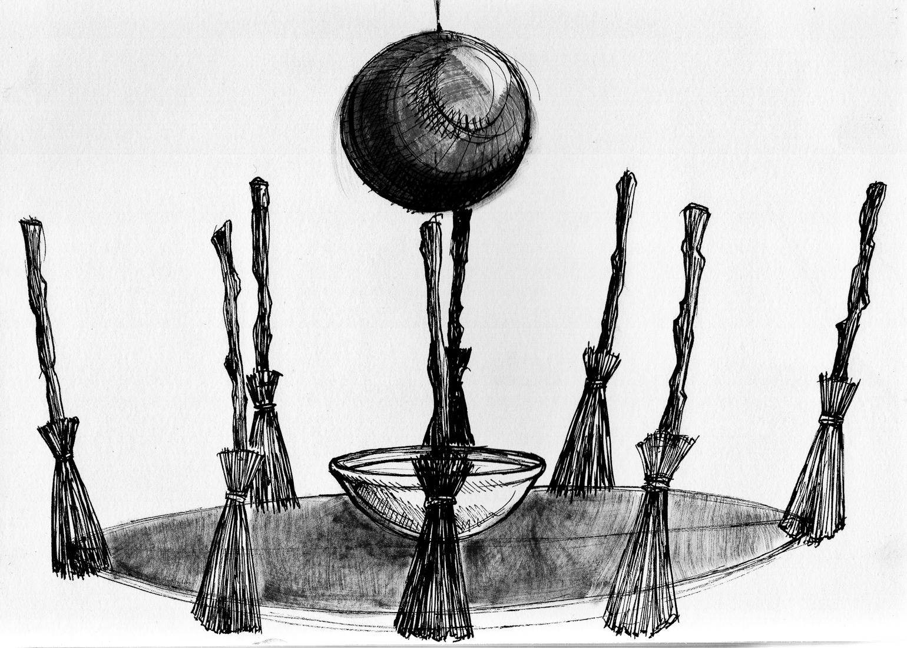
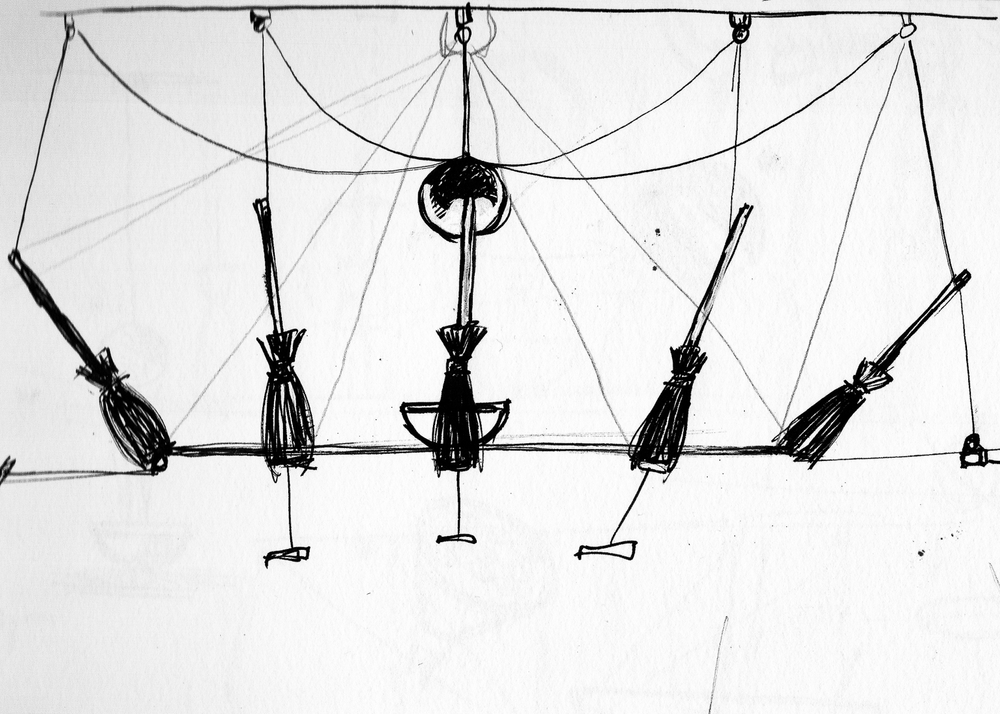
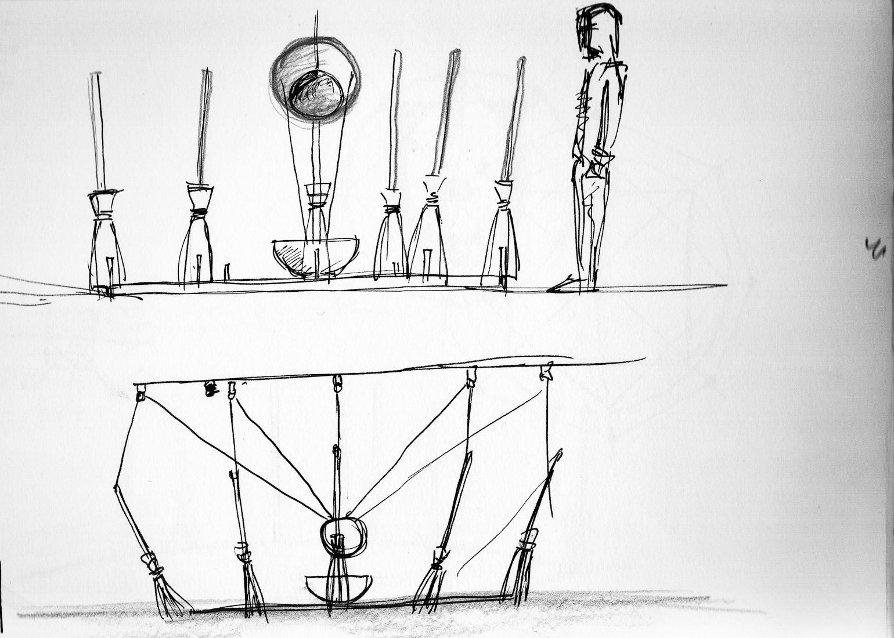
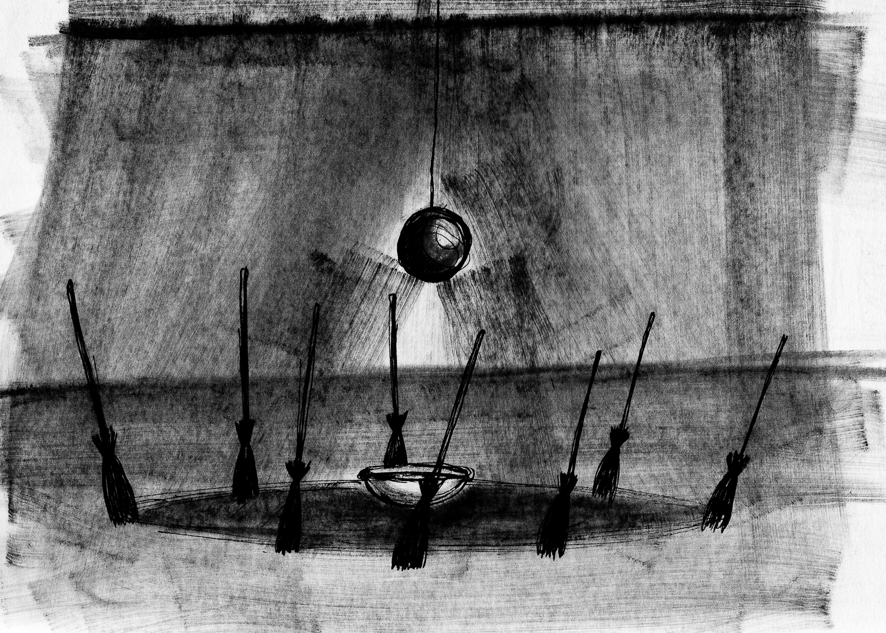
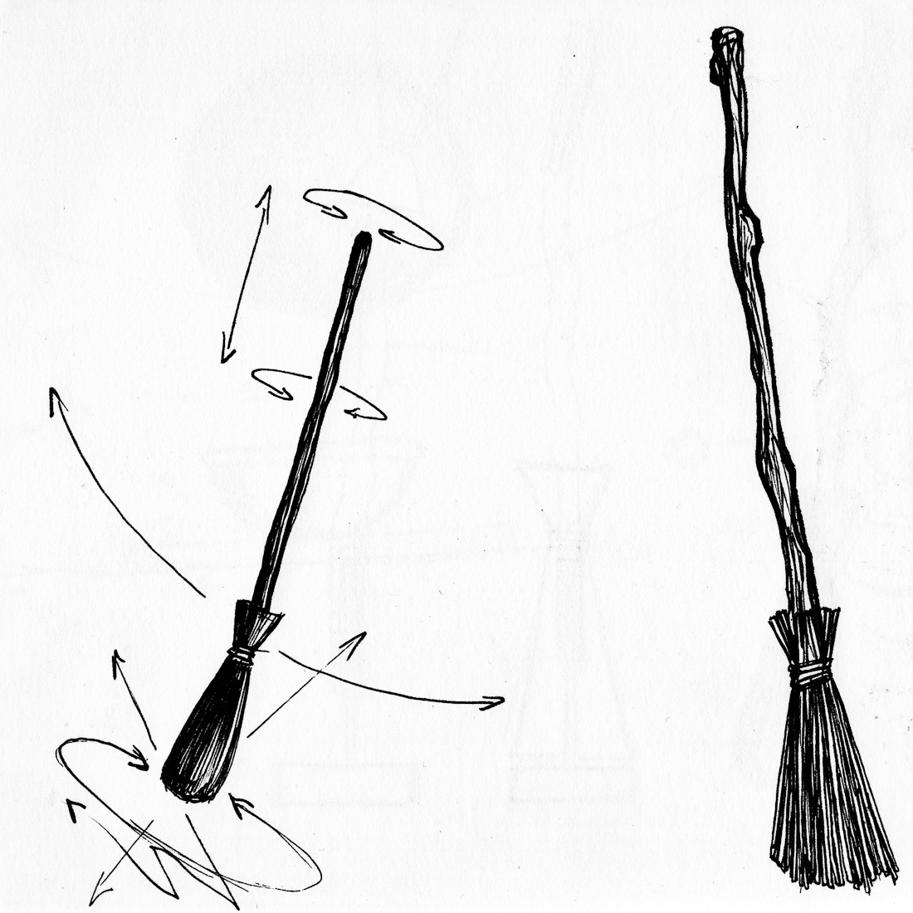
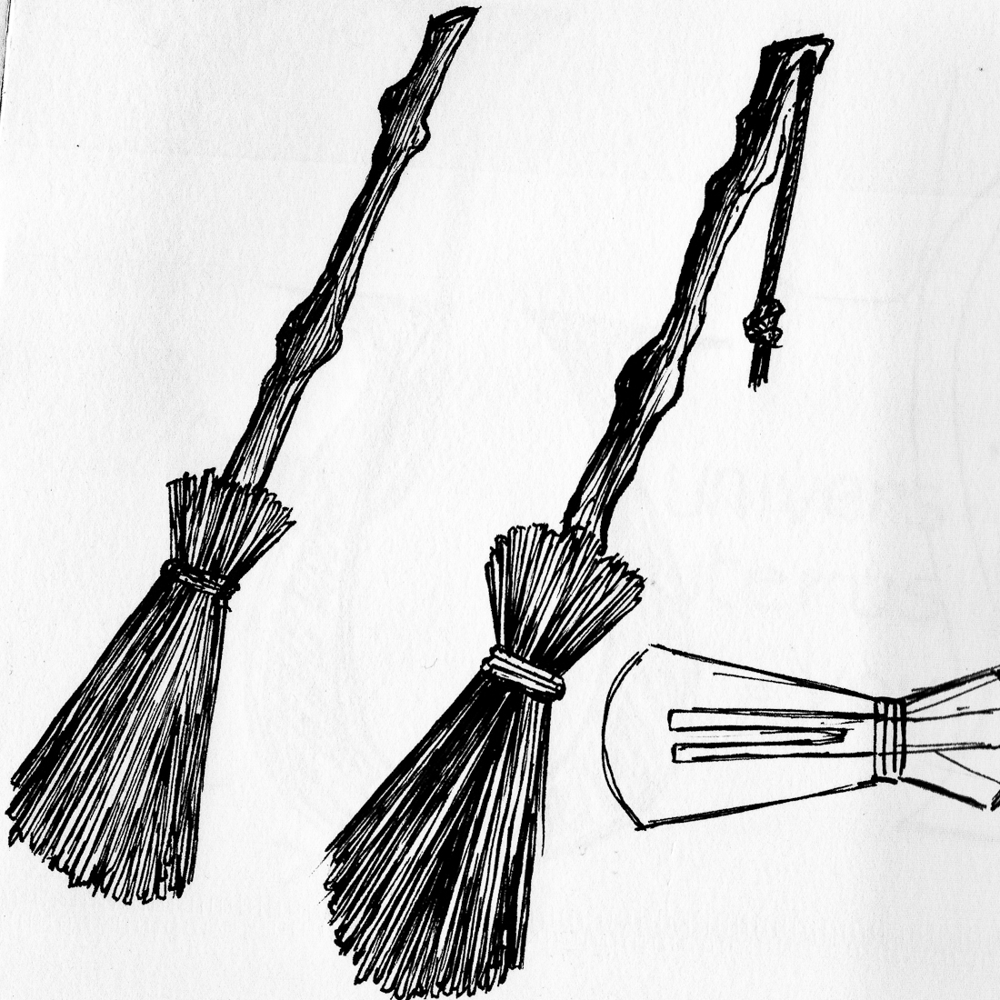

Corps de balais déplace le balai de sa fonction ordinaire vers un régime de présence, où l’outil devient axe, figure et presque corps. L’installation organise une communauté de formes pauvres autour d’un centre rituel, prolongée par la vidéo d’un geste de balayage presque inutile.
Corps de balais est une recherche sculpturale et spatiale à partir de formes pauvres : manches, fibres, tiges, liens, éléments suspendus. Le balai y est déplacé de sa fonction ordinaire vers un régime de présence. Il n’est plus seulement un outil. Il devient axe, station, figure, presque corps.
L’installation organise plusieurs formes verticales dans un espace circulaire, autour d’un centre marqué par une vasque et une sphère suspendue. L’ensemble construit une scène sans récit, mais chargée d’une tension rituelle. Chaque forme semble tenir entre stabilité et bascule, entre ancrage et mouvement, entre objet domestique et présence dressée.
Le projet travaille à partir d’un imaginaire élémentaire : nettoyer, balayer, écarter, tracer, entourer. Mais il ne s’agit pas ici de représenter une scène d’usage. Il s’agit de faire apparaître une communauté de formes pauvres, réduites à leur plus simple intensité. La sphère diffuse la vidéo d’un homme balayant du sel sur un sol de marbre, geste presque inutile, obstiné, sans résolution. Corps de balais explore ainsi une zone intermédiaire où l’outil devient figure, où la matière usuelle devient signe, et où l’espace s’organise comme un lieu de veille, de passage ou de convocation.



